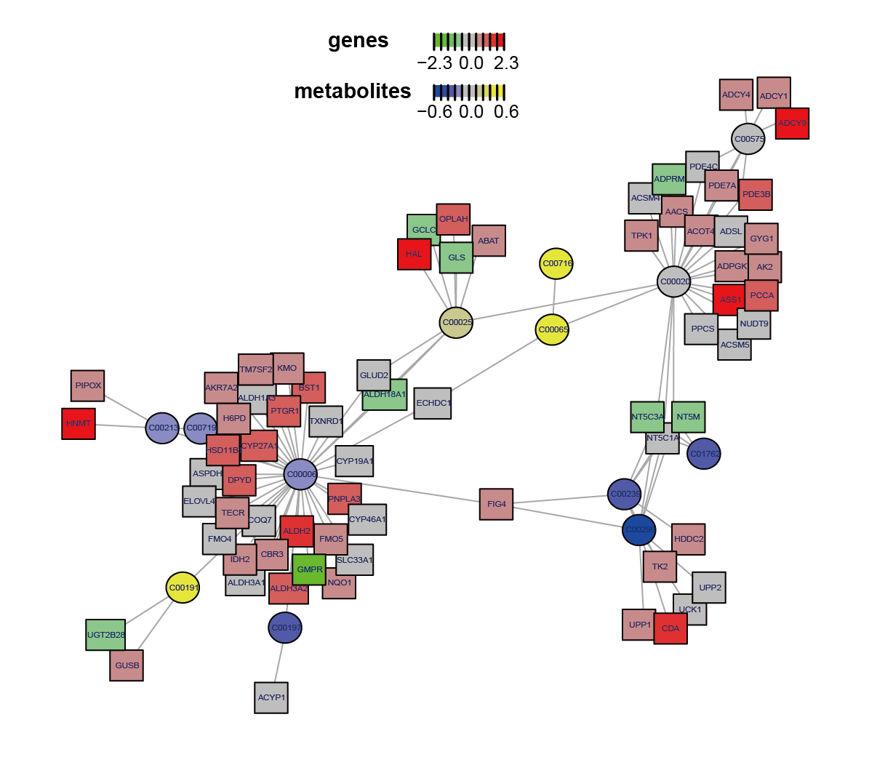
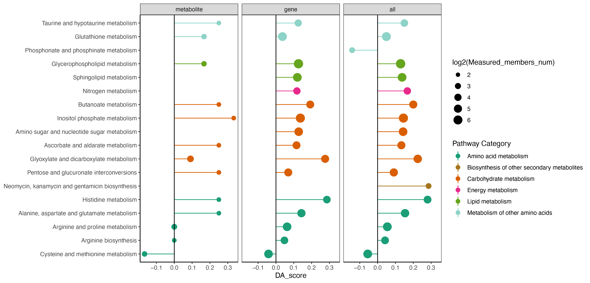
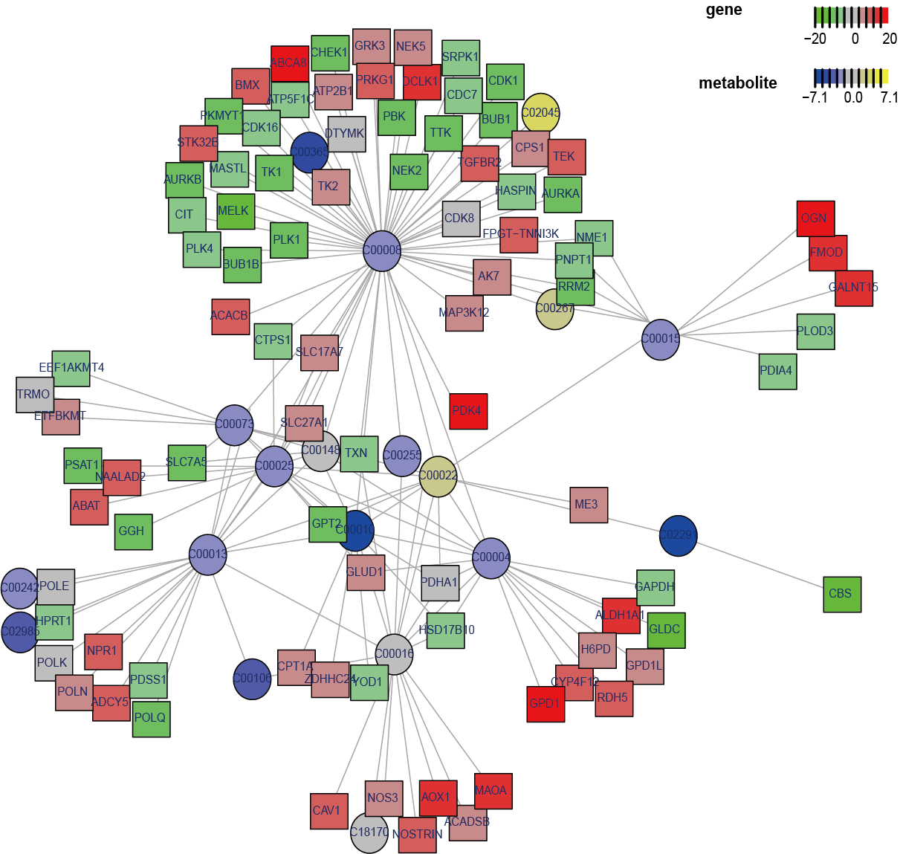
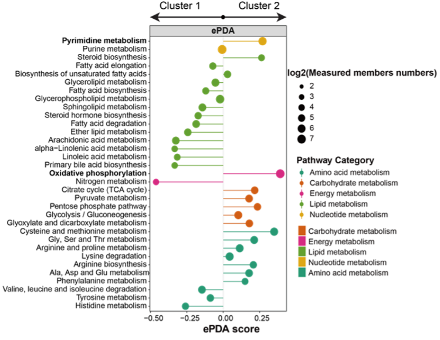
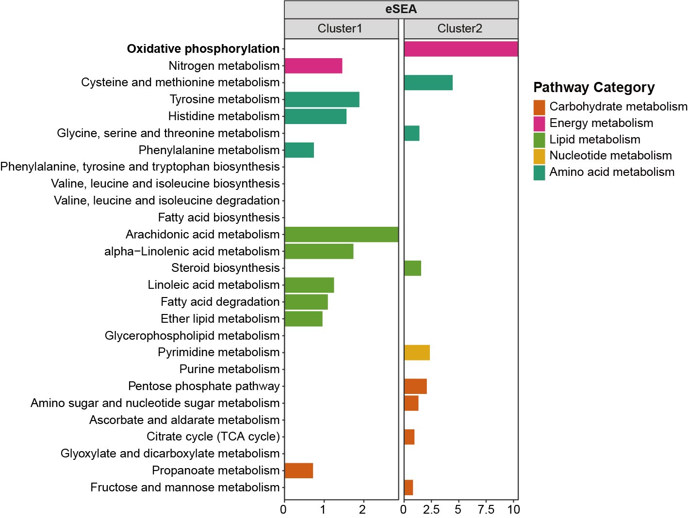
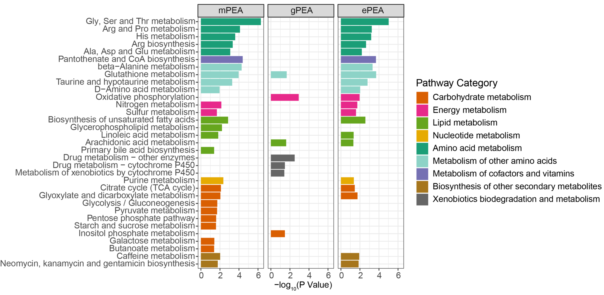

3 R Function Mannual
3.1 Get Started
R Installation
R is a language and environment for statistical computing and graphics. We assume R (version 4.0.0 or higher) has been installed in your local machine. The latest version can be installed following instructions below for different platforms (Windows, Mac, and Linux).
-
Quick link for Windows: Download R for Windows.
-
Quick link for Mac: Download R for Mac OS X 11.
-
Below are shell command lines in Terminal (for Linux):
MNet Installation
if(!require(BiocManager)){
install.packages("BiocManager")
}
if (!require(remotes)) {
BiocManager::install("remotes", dependencies=T)
}
if (!require(devtools)) {
BiocManager::install("devtools", dependencies=T)
}
BiocManager::install("hfang-bristol/dnet", dependencies=T)
BiocManager::install("tuantuangui/MNet", dependencies=T)
## Check the package ‘MNet’ successfully installed
library(help=MNet)3.2 Apply to acute myeloid leukemia
Acute myeloid leukemia (AML) is a group of myeloid neoplasms characterized by high heterogeneity in clinical courses and prognosis, and most AML patients respond poorly to immunotherapies.
Acute monocytic leukemia (AMoL, or AML-M5) is a common subtype of AML, which is characterized by a dominance of monocytes in the bone marrow. These overproduced monocytes interfere with normal immune cell production, which can cause many health complications for the affected individual. While the clinical features distinguishing AML-M5 and other types of AML are well-defined, the exploration of disparities in metabolism and transcriptome remains relatively scarce.
Leveraging the data from Cancer Cell Line Encyclopedia (CCLE), MNet was employed to conduct an in-depth analysis of the discernible difference in metabolism and transcriptome between AML-M5 and other subtypes of AML.
3.2.1 Input data
The Cancer Cell Line Encyclopedia (CCLE) serves as a valuable resource, offering comprehensive metabolomic and transcriptomic data for cancer cell lines, and includes every type of AML. Leveraging the data from CCLE, MNet was employed to conduct an in-depth analysis of the discernible difference in metabolism and transcriptome between AML-M5 and other subtypes of AML.
The differentially expressed metabolic genes (DEMG) and metabolites (DM) between AML-M5 and other subtypes of AML were selected by P values < 0.1. There are 360 DEMGs in 1,548 metabolic genes and 43 DMs in 225 metabolites.
library(dplyr)
library(MNet)
library(ggplot2)
#-------------------------------------------------------------------------------
# Step 1: Input transcriptome data for mllima analysis
#-------------------------------------------------------------------------------
gene_1 <- PathwayExtendData %>%
dplyr::filter(type=="gene")
gene_id <- data.table::fread("input/gene.id.v38.txt",header=F) %>%
as.data.frame() %>%
dplyr::filter(V2=="protein_coding") %>%
dplyr::filter(V3 %in% gene_1$name)
sample <- data.table::fread("input/AML_sample.txt") %>%
as.data.frame()
dat <- data.table::fread("input/CCLE_RNAseq_genes_rpkm_20180929.gct") %>%
as.data.frame()
coding_gene <- data.table::fread("input/gene.id.v38.txt",header=F) %>%
as.data.frame() %>%
dplyr::filter(V2 == "protein_coding")
sample_overlap_info <- data.frame(CCLE_ID=intersect(sample$CCLE_ID,colnames(dat))) %>%
dplyr::left_join(sample,by="CCLE_ID")
dat_filter <- dat %>%
dplyr::select(-Name) %>%
dplyr::filter(Description %in% gene_id$V3) %>%
dplyr::select(Description,all_of(sample_overlap_info$CCLE_ID)) %>%
dplyr::distinct(Description,.keep_all = T) %>%
tibble::column_to_rownames("Description")
write.table(dat_filter,"result/AML_coding_gene.txt",quote=F,sep="\t")
group <- sample_overlap_info$Hist_Subtype2
group[group=="M5"] <- "tumor"
group[group != "tumor"] <- "normal"
table(group)
gene_all <- mlimma(log2(dat_filter+1),group)
write.table(gene_all,"result/AML_gene_all_M5vsOther.txt",quote=F,row.names = F,sep="\t")
#-------------------------------------------------------------------------------
# Step 2: Input metabolome data for mllima analysis and convert metabolite names to KEGG IDs.
#-------------------------------------------------------------------------------
sample <- data.table::fread("input/AML_sample.txt") %>%
as.data.frame()
dat <- data.table::fread("input/CCLE_metabolomics_20190502.csv") %>%
as.data.frame() %>%
dplyr::filter(CCLE_ID %in% sample$CCLE_ID) %>%
dplyr::select(-DepMap_ID) %>%
tibble::column_to_rownames("CCLE_ID") %>%
t() %>%
as.data.frame()
sample_overlap_info <- data.frame(CCLE_ID=intersect(sample$CCLE_ID,colnames(dat))) %>%
dplyr::left_join(sample,by="CCLE_ID")
dat_filter <- dat %>%
dplyr::select(sample_overlap_info$CCLE_ID)
group <- sample_overlap_info$Hist_Subtype2
group[group=="M5"] <- "tumor"
group[group != "tumor"] <- "normal"
table(group)
metabolite_all <- mlimma(dat_filter,group)
write.table(metabolite_all,"result/AML_metabolite_all_M5vsOther.txt",quote=F,row.names = F,sep="\t")
kid <- name2keggid(metabolite_all$name)
metabolite_kid <- metabolite_all %>%
dplyr::left_join(kid,by=c("name"="Name")) %>%
unique()
write.table(metabolite_kid,"result/AML_metabolite_all_M5vsOther_KEGGID.txt",quote=F,row.names = F,sep="\t")3.2.2 Met-Gene Subnetwork
Conducted metabolism-related subnetwork analysis based on metabolomic and transcriptomic data by comparing AML-M5 with other subtypes of AML. Upon examining the metabolites and genes within the subnetwork, glutamate emerged as an important metabolite in AML-M5, aligning with the differential analysis and pathway enrichment findings and indicating glutamate best explains the biological processes while comparing with the other AML subtypes.
library(dplyr)
library(MNet)
library(ggplot2)
#-------------------------------------------------------------------------------
# Step 1: Load mlimma analysis data and set parameters
#-------------------------------------------------------------------------------
diff_gene <- data.table::fread("result/AML_gene_all_M5vsOther.txt") %>%
as.data.frame()
diff_meta <- data.table::fread("result/AML_metabolite_all_M5vsOther_KEGGID.txt") %>%
as.data.frame() %>%
dplyr::filter(!is.na(KEGG_id)) %>%
tidyr::separate_rows(KEGG_id,sep=";") %>%
dplyr::distinct(KEGG_id,.keep_all = T) %>%
dplyr::select(-name) %>%
dplyr::rename("name"="KEGG_id")
names(diff_meta)[4] <- "p_value"
names(diff_gene)[4] <- "p_value"
#-------------------------------------------------------------------------------
# Step 2: Conducted metabolism-related subnetwork analysis
#-------------------------------------------------------------------------------
pdf("result/AML_pdent.pdf",width=10,height = 10)
a <- pdnet(diff_meta,diff_gene,nsize=80)
dev.off()
node <- a$node_result
write.table(node,"result/AML-pdnet_node.txt",quote=F,row.names=F,sep="\t")
edge <- a$edge_result
write.table(edge,"result/AML-pdnet_edge.txt",quote=F,row.names=F,sep="\t")
metabolite <- node %>%
dplyr::filter(type=="metabolite")
gene <- node %>%
dplyr::filter(type=="gene")
result_metabolite <- PathwayAnalysis(metabolite$name,out="metabolite",test="hypergeo")
result_gene <- PathwayAnalysis(gene$name,out="gene",test="hypergeo")
result_all <- PathwayAnalysis(c(gene$name,metabolite$name),out="Extended",test="hypergeo")
write.table(result_metabolite$output,"result/AML-pdnet_metabolite_enrichment.txt",quote=F,row.names = F,sep="\t")
write.table(result_gene$output,"result/AML-pdnet_gene_enrichment.txt",quote=F,row.names = F,sep="\t")
write.table(result_all$output,"result/AML-pdnet_all_enrichment.txt",quote=F,row.names = F,sep="\t")
if (0) {
kegg_pathway_uniq <- PathwayExtendData %>%
dplyr::select(kegg_pathwayname,kegg_category) %>%
dplyr::rename("PATHWAY"="kegg_pathwayname") %>%
dplyr::rename("pathway_type"="kegg_category") %>%
unique()
result <- rbind(result_metabolite$output %>% dplyr::mutate(type="metabolite"),
result_gene$output %>% dplyr::mutate(type="gene"),
result_all$output %>% dplyr::mutate(type="all")) %>%
# dplyr::filter(nOverlap > 1) %>%
dplyr::left_join(kegg_pathway_uniq,by=c("name"="PATHWAY")) %>%
dplyr::filter(pathway_type != "Glycan biosynthesis and metabolism") %>%
dplyr::filter(!name %in% c("Fructose and mannose metabolism","Amino sugar and nucleotide sugar metabolism",
"Galactose metabolism","Ascorbate and aldarate metabolism","Pentose and glucuronate interconversions")) %>%
dplyr::arrange(pvalue)
pathway_hh <- unique(result$pathway_type)
result <- result %>%
dplyr::filter(!pathway_type %in% c("Metabolism of terpenoids and polyketides","Metabolism of cofactors and vitamins",
"Biosynthesis of other secondary metabolites","Metabolism of other amino acids",
"Xenobiotics biodegradation and metabolism")) %>%
dplyr::arrange(match(pathway_type,pathway_hh))
result$name <- factor(result$name,levels = rev(unique(result$name)))
result$pathway_type <- factor(result$pathway_type,levels=unique(kegg_pathway_uniq$pathway_type))
result$type <- factor(result$type,levels=c("metabolite","gene","all"))
p1 <- ggplot(result,aes(name,-log10(pvalue)))+
geom_bar(stat="identity",aes(fill=pathway_type))+
scale_fill_manual(values=RColorBrewer::brewer.pal(11, "Set3"),name="Pathway Category",
breaks=unique(kegg_pathway_uniq$pathway_type))+
scale_y_continuous(expand = c(0, 0))+
coord_flip()+
facet_grid(. ~ type,scales="free_x")+
theme_bw()+
labs(x=NULL)
ggsave("result/AML-pdnet_epe.pdf",p1,width=10,height = 5)
}
3.2.3 Extended Pathway Analyses
Conducted comprehensive pathway analyses based on genes, metabolites, and genes with metabolites.
3.2.3.1 ePEA
The results of metabolite-based and gene-based pathway enrichment analysis (M-based PEA and G-based PEA) identified a smaller set of overlapping entities than those uncovered by extended pathway enrichment analysis (ePEA) in every pathway. Notably, ePEA uncovered a broader and more statistically significant set of biological pathways, as indicated by more significant P values.
library(MNet)
library(dplyr)
library(ggplot2)
#-------------------------------------------------------------------------------
# Step 1: Load mlimma analysis data and conduct PathwayAnalysis
#-------------------------------------------------------------------------------
gene_all <- data.table::fread("result/AML_gene_all_M5vsOther.txt") %>%
as.data.frame()
metabolite_all <- data.table::fread("result/AML_metabolite_all_M5vsOther_KEGGID.txt") %>%
as.data.frame() %>%
dplyr::filter(!is.na(KEGG_id)) %>%
tidyr::separate_rows(KEGG_id,sep=";") %>%
dplyr::distinct(KEGG_id,.keep_all = T) %>%
dplyr::select(-name) %>%
dplyr::rename("name"="KEGG_id")
dat_all <- rbind(gene_all,metabolite_all)
diff_gene <- gene_all %>%
dplyr::filter(P.Value < 0.1)
diff_meta <- metabolite_all %>%
dplyr::filter(P.Value < 0.1)
diff_all <- rbind(diff_gene,diff_meta)
result_gene <- PathwayAnalysis(diff_gene$name,out="gene",p_cutoff=1.5)
result_meta <- PathwayAnalysis(diff_meta$name,out="metabolite",p_cutoff=1.5)
result_all <- PathwayAnalysis(diff_all$name,out="Extended",p_cutoff=1.5)
pathway_overlap <- intersect(result_gene$output$name,result_meta$output$name)
pathway_all <- rbind(result_gene$output,result_meta$output,result_all$output) %>%
dplyr::filter(pvalue < 0.05) %>%
dplyr::filter(nOverlap >= 3) %>%
dplyr::filter(name %in% pathway_overlap) %>%
dplyr::pull(name) %>%
unique()
result_gene_filter <- result_gene$output %>%
as.data.frame() %>%
dplyr::select(name,nOverlap,pvalue) %>%
dplyr::filter(name %in% pathway_all) %>%
dplyr::mutate(type="gene")
result_meta_filter <- result_meta$output %>%
as.data.frame() %>%
dplyr::select(name,nOverlap,pvalue) %>%
dplyr::filter(name %in% pathway_all) %>%
dplyr::mutate(type="metabolite")
result_all_filter <- result_all$output %>%
as.data.frame() %>%
dplyr::select(name,nOverlap,pvalue) %>%
dplyr::filter(name %in% pathway_all) %>%
dplyr::mutate(type="all")
pathway_type <- PathwayExtendData %>%
dplyr::select(kegg_pathwayname,kegg_category) %>%
unique()
all <- rbind(result_gene_filter,result_meta_filter,result_all_filter) %>%
dplyr::mutate(type=factor(type,levels=c("metabolite","gene","all"))) %>%
dplyr::left_join(pathway_type,by=c("name"="kegg_pathwayname")) %>%
dplyr::arrange(kegg_category) %>%
dplyr::mutate(name=factor(name,levels=unique(name)))
#-------------------------------------------------------------------------------
# Step 2: Dotplot
#-------------------------------------------------------------------------------
p <- ggplot(all,aes(type,name))+
geom_point(aes(size=log2(nOverlap),color=-log10(pvalue)))+
theme_bw()+
theme(panel.border = element_blank(),panel.grid.major = element_blank(),
panel.grid.minor = element_blank(),axis.line = element_line(colour = "black"))+
scale_color_gradient(low="white",high="red")+
labs(x=NULL,y="Pathway name")
ggsave("result/AML-ePEA.pdf",p,width=6,height = 3.5)
if (0) {
pathway_gene_filter <- result_gene$output %>%
dplyr::filter(pvalue < 0.05)
pathway_meta_filter <- result_meta$output %>%
dplyr::filter(pvalue < 0.05)
pathway_all_filter <- result_all$output %>%
dplyr::filter(pvalue < 0.05)
library("VennDiagram")
a<-venn.diagram(list(gene=pathway_gene_filter$name,
metabolite=pathway_meta_filter$name,
all=pathway_all_filter$name),filename=NULL,fill=c("#2b6a99","#f16c23","#005B1D"),alpha =1)
pdf("result/AML-PE-ven.pdf",width=5,height = 5)
grid.draw(a)
dev.off()
}
3.2.3.2 ePDA
The extended pathway differential abundance (ePDA) method revealed a greater number of pathways compared to gene-based or metabolite-based approaches, demonstrating higher stringency.
library(dplyr)
library(ggplot2)
library(MNet)
#-------------------------------------------------------------------------------
# Step 1: Load mlimma analysis data and conduct DAscore analysis
#-------------------------------------------------------------------------------
## Metabolite
metabolite_kid <- data.table::fread("result/AML_metabolite_all_M5vsOther_KEGGID.txt") %>%
as.data.frame()
meta_all <- metabolite_kid %>%
dplyr::filter(!is.na(KEGG_id)) %>%
tidyr::separate_rows(KEGG_id,sep=";") %>%
dplyr::distinct(KEGG_id,.keep_all = T) %>%
dplyr::select(-name) %>%
dplyr::rename("name"="KEGG_id")
meta_diff <- meta_all %>%
dplyr::filter(P.Value < 0.5) %>%
dplyr::filter(abs(logFC) > 0)
diff_meta_increase <- meta_all %>%
dplyr::filter(logFC > 0) %>%
dplyr::filter(P.Value < 0.5)
diff_meta_decrease <- meta_all %>%
dplyr::filter(logFC < 0) %>%
dplyr::filter(P.Value < 0.5)
DAscore_meta <- DAscore(diff_meta_increase$name,diff_meta_decrease$name,meta_all$name,
min_measured_num = 3,out="metabolite",sort_plot="category")
ggsave("result/AML-metabolite_DA.pdf",DAscore_meta$p,width=10,height = 8)
write.table(DAscore_meta$result,"result/AML-metabolite_DA.txt",quote=F,row.names=F,sep="\t")
## Gene
gene_all <- data.table::fread("result/AML_gene_all_M5vsOther.txt") %>%
as.data.frame()
diff_gene_increase <- gene_all %>%
dplyr::filter(logFC > 0) %>%
dplyr::filter(P.Value < 0.1)
diff_gene_decrease <- gene_all %>%
dplyr::filter(logFC < -0) %>%
dplyr::filter(P.Value < 0.1)
DAscore_gene <- DAscore(diff_gene_increase$name,diff_gene_decrease$name,gene_all$name,
min_measured_num = 10,out="gene",sort_plot="category")
ggsave("result/AML-gene_DA.pdf",DAscore_gene$p,width=10,height = 8)
write.table(DAscore_gene$result,"result/AML-gene_DA.txt",quote=F,row.names=F,sep="\t")
## Met-Gene
gene_all <- data.table::fread("result/AML_gene_all_M5vsOther.txt") %>%
as.data.frame()
metabolite_all <- data.table::fread("result/AML_metabolite_all_M5vsOther_KEGGID.txt") %>%
as.data.frame() %>%
dplyr::filter(!is.na(KEGG_id)) %>%
tidyr::separate_rows(KEGG_id,sep=";") %>%
dplyr::distinct(KEGG_id,.keep_all = T) %>%
dplyr::select(-name) %>%
dplyr::rename("name"="KEGG_id")
dat_all <- rbind(gene_all,metabolite_all)
dat_diff <- rbind(gene_all %>% filter(abs(logFC) > 0) %>% filter(P.Value < 0.1),
metabolite_all %>% filter(abs(logFC) > 0) %>% filter(P.Value < 0.1))
diff_dat_increase <- dat_diff %>%
dplyr::filter(logFC > 0)
diff_dat_decrease <- dat_diff %>%
dplyr::filter(logFC < 0)
DAscore_GM <- DAscore(diff_dat_increase$name,diff_dat_decrease$name,dat_all$name,
min_measured_num = 10,out="Extended",sort_plot="category")
ggsave("result/AML-GM_DA.pdf",DAscore_GM$p,width=10,height = 8)
write.table(DAscore_GM$result,"result/AML-GM_DA.txt",quote=F,row.names=F,sep="\t")
#-------------------------------------------------------------------------------
# Step 2: Barplot
#-------------------------------------------------------------------------------
da_meta <- data.table::fread("result/AML-metabolite_DA.txt") %>%
as.data.frame() %>%
dplyr::select(Pathway,DA_score,`Pathway Category`,Measured_members_num) %>%
dplyr::mutate(Type="metabolite") %>%
dplyr::mutate(da_type_meta=ifelse(DA_score > 0,"big",
ifelse(DA_score < 0,"little","middle")))
da_gene <- data.table::fread("result/AML-gene_DA.txt") %>%
as.data.frame() %>%
dplyr::select(Pathway,DA_score,`Pathway Category`,Measured_members_num) %>%
dplyr::mutate(Type="gene") %>%
dplyr::mutate(da_type_gene=ifelse(DA_score > 0,"big",
ifelse(DA_score < 0,"little","middle")))
da_all <- data.table::fread("result/AML-GM_DA.txt") %>%
as.data.frame() %>%
dplyr::select(Pathway,DA_score,`Pathway Category`,Measured_members_num) %>%
dplyr::mutate(Type="all") %>%
dplyr::mutate(da_type_all =ifelse(DA_score > 0,"big",
ifelse(DA_score < 0,"little","middle")))
pathway_overlap <- da_meta %>%
dplyr::full_join(da_gene,by="Pathway") %>%
dplyr::full_join(da_all,by="Pathway") %>%
dplyr::filter(!is.na(DA_score.x)) %>%
dplyr::filter(!is.na(DA_score.y)) %>%
dplyr::filter(da_type_meta == da_type_gene | da_type_meta=="middle"|da_type_gene=="middle") %>%
dplyr::pull(Pathway)
result_filter <- rbind(da_meta %>%
dplyr::select(-da_type_meta),
da_gene %>%
dplyr::select(-da_type_gene),
da_all %>%
dplyr::select(-da_type_all)) %>%
dplyr::filter(Pathway %in% pathway_overlap) %>%
dplyr::arrange(DA_score) %>%
dplyr::arrange(`Pathway Category`) %>%
dplyr::filter(Measured_members_num >= 3) %>%
dplyr::filter(!(Measured_members_num < 10 & Type=="gene")) %>%
dplyr::mutate(Pathway=factor(Pathway,levels = unique(Pathway))) %>%
dplyr::mutate(Type=factor(Type,levels=c("metabolite","gene","all")))
colp <- c("Amino acid metabolism" ="#1B9E77",
"Carbohydrate metabolism"="#D95F02","Glycan biosynthesis and metabolism"="#1F78B4",
"Metabolism of cofactors and vitamins"="#7570B3","Metabolism of terpenoids and polyketides"="#BC80BD",
"Metabolism of other amino acids"="#8DD3C7",
"Energy metabolism"="#E7298A","Lipid metabolism"="#66A61E","Nucleotide metabolism"="#E6AB02",
"Biosynthesis of other secondary metabolites"="#A6761D",
"Xenobiotics biodegradation and metabolism"="#666666")
p <- ggplot2::ggplot(result_filter)+
ggplot2::geom_point(ggplot2::aes(x=Pathway,y=DA_score,size=log2(Measured_members_num),color=`Pathway Category`))+
ggplot2::geom_pointrange(ggplot2::aes(x=Pathway,y=DA_score,ymin=0,ymax=DA_score,color=`Pathway Category`))+
scale_color_manual(values=colp)+
theme_bw()+
theme(panel.grid.major = element_blank(), panel.grid.minor = element_blank(),
axis.line = element_line(colour = "black"))+
geom_hline(yintercept=c(0))+
ggplot2::coord_flip()+
ggplot2::xlab(NULL)+
facet_grid(. ~ Type)
ggsave("result/AML-ePDA.pdf",p,width=12.5,height = 6)
### venn
if (0) {
num_meta <- da_meta$Pathway
num_gene <- da_gene$Pathway
num_all <- da_all$Pathway
dat_num <- data.frame(type=c("metabolite","gene","all"),
num=c(length(num_meta),length(num_gene),length(num_all))) %>%
dplyr::mutate(type=factor(type,levels=c("metabolite","gene","all")))
p <- ggplot(dat_num,aes(type,num,fill=type))+
geom_bar(stat="identity")+
scale_fill_manual(values=c("metabolite"="#f16c23","gene"="#2b6a99","all"="#005B1D"))+
theme_bw()
ggsave("result/AML-DA_num.pdf",p,width=6,height = 5)
}
3.2.3.3 eSEA
Gene set enrichment analysis (GSEA) and metabolite set enrichment analysis (MSEA) exhibited minimal pathway overlap, indicating a limitation of this method. This limitation was effectively addressed through extended pathway set enrichment analysis (eSEA), considering both genes and metabolites, thereby enhancing and complementing the insights provided by GSEA and MSEA.
library(MNet)
library(ggplot2)
library(dplyr)
#-------------------------------------------------------------------------------
# Step 1: Load mlimma analysis data and conduct ESEA analysis
#-------------------------------------------------------------------------------
gene_all <- data.table::fread("input/AML_gene_all_M5vsOther.txt") %>%
as.data.frame() %>%
dplyr::arrange(desc(logFC))
metabolite_all <- data.table::fread("input/AML_metabolite_all_M5vsOther_KEGGID.txt") %>%
as.data.frame() %>%
dplyr::filter(!is.na(KEGG_id)) %>%
tidyr::separate_rows(KEGG_id,sep=";") %>%
dplyr::distinct(KEGG_id,.keep_all = T) %>%
dplyr::select(-name) %>%
dplyr::rename("name"="KEGG_id") %>%
dplyr::arrange(desc(logFC))
all_result <- rbind(metabolite_all,gene_all) %>%
dplyr::arrange(desc(logFC))
all <- all_result$logFC
names(all) <- all_result$name
gene <- gene_all$logFC
names(gene) <- gene_all$name
meta <- metabolite_all$logFC
names(meta) <- metabolite_all$name
result_meta <- ESEA(meta,out="metabolite",minSize = 2)
result_gene <- ESEA(gene,out = "gene",minSize = 5)
result_all <- ESEA(all,out="Extended",minSize = 7)
result_meta_filter <- result_meta %>%
dplyr::filter(pval < 0.1) %>%
dplyr::mutate(type="metabolite")
result_gene_filter <- result_gene %>%
dplyr::filter(pval < 0.1) %>%
dplyr::mutate(type="gene")
result_all_filter <- result_all %>%
dplyr::filter(pval < 0.1) %>%
dplyr::mutate(type="all")
if (0) {
library("VennDiagram")
a<-venn.diagram(list(gene=result_gene_filter$pathway,
metabolite=result_meta_filter$pathway,
all=result_all_filter$pathway),filename=NULL,fill=c("#2b6a99","#f16c23","#005B1D"),alpha =1)
pdf("result/AML-eSEA-ven.pdf",width=5,height = 5)
grid.draw(a)
dev.off()
}
pathway_overlap <- unique(c(result_meta_filter$pathway,result_gene_filter$pathway,result_all_filter$pathway))
## Only one omics
only_one <- c(setdiff(result_meta$pathway,result_gene$pathway),setdiff(result_gene$pathway,result_meta$pathway))
result_temp <- rbind(result_meta %>% mutate(type="metabolite"),
result_gene %>% mutate(type="gene"),
result_all %>% mutate(type="all")) %>%
dplyr::filter(pathway %in% pathway_overlap) %>%
dplyr::filter(!pathway %in% only_one) %>%
dplyr::filter(!pathway %in% c("Tryptophan metabolism","Porphyrin metabolism","Pentose phosphate pathway",
"Galactose metabolism","D-Amino acid metabolism","Glycolysis / Gluconeogenesis",
"Glycerolipid metabolism","Citrate cycle (TCA cycle)"))
result_1 <- result_temp %>%
dplyr::filter(type=="all") %>%
dplyr::arrange(NES)
result <- result_temp %>%
dplyr::arrange(match(pathway,result_1$pathway)) %>%
dplyr::arrange(match(type,c("metabolite","gene","all"))) %>%
dplyr::mutate(type=factor(type,levels = c("metabolite","gene","all"))) %>%
dplyr::mutate(pathway=factor(pathway,levels=result_1$pathway))
#-------------------------------------------------------------------------------
# Step 2: Barplot
#-------------------------------------------------------------------------------
p <- ggplot(result,aes(pathway,NES,fill=-log10(pval)))+
geom_bar(stat="identity")+
theme_bw()+
geom_hline(yintercept=c(0))+
theme(panel.grid.major = element_blank(),
panel.grid.minor = element_blank())+
scale_fill_gradient(low="pink",high="red")+
coord_flip()+
facet_grid(. ~ type,scales="free_x")+
labs(x="Pathway name")
ggsave("result/AML-eSEA.pdf",p,width=10,height = 3)
3.3 Apply to triple-negative breast cancer
The case study involves an integrated analysis of metabolomic and transcriptomic data, with the aim of understanding rapidly proliferating breast cancers Cancer Research.
The study characterizes the metabolomic profile of two types of 31 breast tumors in human, revealing elevated pyrimidine metabolism and glutaminolysis pathways in triple-negative breast cancer (TNBC).
As an example of mixed metabolites and genes analyses, we use both dataset of metabolite intensity and gene expression data as reported in the paper. The metabolomics data was accessed from the paper, and the gene expression data was obtained from GEO (GSE173991).
3.3.1 Met-Gene Subnetwork
The authors’ results demonstrate the essential role of glutamine catabolism-based pyrimidine metabolism in TNBC. MNet not only corroborates this finding but also highlights the significance of oxidative phosphorylation in cluster 2.
library(dplyr)
library(MNet)
library(ggplot2)
#-------------------------------------------------------------------------------
# Step 1: Input metabolome and transcriptome data for mllima analysis
#-------------------------------------------------------------------------------
diff_meta <- mlimma(meta_dat,group)
diff_gene <- mlimma(gene_dat,group)
names(diff_meta)[4] <- "p_value"
names(diff_gene)[4] <- "p_value"
#-------------------------------------------------------------------------------
# Step 2: Conducted metabolism-related subnetwork analysis
#-------------------------------------------------------------------------------
pdf("result/TNBC_pdent.pdf",width=10,height = 10)
a <- pdnet(diff_meta,diff_gene,nsize=100)
dev.off()
node <- a$node_result
write.table(node,"result/TNBC_pdnet_node.txt",quote=F,row.names=F,sep="\t")
edge <- a$edge_result
write.table(edge,"result/TNBC_pdnet_edge.txt",quote=F,row.names=F,sep="\t")
metabolite <- node %>%
dplyr::filter(type=="metabolite")
gene <- node %>%
dplyr::filter(type=="gene")
result_metabolite <- PathwayAnalysis(metabolite$name,out="metabolite",test="hypergeo")
result_gene <- PathwayAnalysis(gene$name,out="gene",test="hypergeo")
result_all <- PathwayAnalysis(c(gene$name,metabolite$name),out="Extended",test="hypergeo")
write.table(result_metabolite$output,"result/TNBC_pdnet_metabolite_enrichment.txt",quote=F,row.names = F,sep="\t")
write.table(result_gene$output,"result/TNBC_pdnet_gene_enrichment.txt",quote=F,row.names = F,sep="\t")
write.table(result_all$output,"result/TNBC_pdnet_all_enrichment.txt",quote=F,row.names = F,sep="\t")
kegg_pathway_uniq <- PathwayExtendData %>%
dplyr::select(kegg_pathwayname,kegg_category) %>%
dplyr::rename("PATHWAY"="kegg_pathwayname") %>%
dplyr::rename("pathway_type"="kegg_category") %>%
unique()
result <- rbind(result_metabolite$output %>% dplyr::mutate(type="metabolite"),
result_gene$output %>% dplyr::mutate(type="gene"),
result_all$output %>% dplyr::mutate(type="all")) %>%
dplyr::left_join(kegg_pathway_uniq,by=c("name"="PATHWAY")) %>%
dplyr::filter(pathway_type != "Glycan biosynthesis and metabolism") %>%
dplyr::filter(!name %in% c("Fructose and mannose metabolism",
"Amino sugar and nucleotide sugar metabolism",
"Galactose metabolism",
"Ascorbate and aldarate metabolism",
"Pentose and glucuronate interconversions")) %>%
dplyr::arrange(pvalue)
pathway_hh <- unique(result$pathway_type)
result <- result %>%
dplyr::filter(!pathway_type %in% c("Metabolism of terpenoids and polyketides",
"Metabolism of cofactors and vitamins",
"Biosynthesis of other secondary metabolites",
"Metabolism of other amino acids",
"Xenobiotics biodegradation and metabolism")) %>%
dplyr::arrange(match(pathway_type,pathway_hh))
result$name <- factor(result$name,levels = rev(unique(result$name)))
result$pathway_type <- factor(result$pathway_type,levels=unique(kegg_pathway_uniq$pathway_type))
result$type <- factor(result$type,levels=c("metabolite","gene","all"))
p1 <- ggplot(result,aes(name,-log10(pvalue)))+
geom_bar(stat="identity",aes(fill=pathway_type))+
scale_fill_manual(values=RColorBrewer::brewer.pal(11, "Set3"),name="Pathway Category",
breaks=unique(kegg_pathway_uniq$pathway_type))+
scale_y_continuous(expand = c(0, 0))+
coord_flip()+
facet_grid(. ~ type,scales="free_x")+
theme_bw()+
labs(x=NULL)
ggsave("result/TNBC_pdnet_epe.pdf",p1,width=10,height = 5)
3.3.2 Extended Pathway Analyses
The authors found that pyrimidine and purine metabolism, carbon metabolism, and the energy production related pathways were highly enriched in cluster 2 while many lipid/fatty acid metabolism related pathways were enriched in cluster 1, which aligns with similar result obtained from MNet.
3.3.2.1 ePEA
Extended pathway enrichment analysis.
library(dplyr)
library(MNet)
library(stringr)
library(ggplot2)
library(RColorBrewer)
#-------------------------------------------------------------------------------
# Step 1: Input metabolome and transcriptome data for mllima analysis
#-------------------------------------------------------------------------------
all_meta <- mlimma(meta_dat,group)
all_gene <- mlimma(gene_dat,group)
#-------------------------------------------------------------------------------
# Step 2: PathwayAnalysis
#-------------------------------------------------------------------------------
## Gene
diff_gene_increase <- all_gene %>%
dplyr::filter(logFC > 0.58) %>%
dplyr::filter(adj.P.Val < 0.05)
result_gene_increase <- PathwayAnalysis(diff_gene_increase$name,out="gene",p_cutoff=0.05)
ggsave("result/TNBC_gene_increase.pdf",result_gene_increase$p_barplot,width=10,height = 5)
write.table(result_gene_increase$output,"result/TNBC_gene_increase.txt",quote=F,row.names = F,sep="\t")
diff_gene_decrease <- all_gene %>%
dplyr::filter(logFC < -0.58) %>%
dplyr::filter(adj.P.Val < 0.05)
result_gene_decrease <- PathwayAnalysis(diff_gene_decrease$name,out="gene",p_cutoff=0.05)
ggsave("result/TNBC_gene_decrease.pdf",result_gene_decrease$p_barplot,width=10,height = 5)
write.table(result_gene_decrease$output,"result/TNBC_gene_decrease.txt",quote=F,row.names = F,sep="\t")
## Metabolite
## Filter the increase differential genes and metabolites
diff_meta_increase <- all_meta %>%
dplyr::filter(logFC > 0.58) %>%
dplyr::filter(adj.P.Val < 0.05)
result_meta_increase <- PathwayAnalysis(diff_meta_increase$name,out="metabolite",p_cutoff=0.05)
ggsave("result/TNBC_meta_increase.pdf",result_meta_increase$p_barplot,width=10,height = 5)
write.table(result_meta_increase$output,"result/TNBC_meta_increase.txt",quote=F,row.names = F,sep="\t")
diff_meta_decrease <- all_meta %>%
dplyr::filter(logFC < -0.58) %>%
dplyr::filter(adj.P.Val < 0.05)
result_meta_decrease <- PathwayAnalysis(diff_meta_decrease$name,out="metabolite",p_cutoff=0.05)
ggsave("result/TNBC_meta_decrease.pdf",result_meta_decrease$p_barplot,width=10,height = 5)
write.table(result_meta_decrease$output,"result/TNBC_meta_decrease.txt",quote=F,row.names = F,sep="\t")
## Met-Gene
diff_increase <- rbind(diff_gene_increase,diff_meta_increase)
result_all_increase <- PathwayAnalysis(diff_increase$name,out="Extended",p_cutoff=0.05)
ggsave("result/TNBC_all_increase.pdf",result_all_increase$p_barplot,width=10,height = 5)
write.table(result_all_increase$output,"result/TNBC_all_increase.txt",quote=F,row.names = F,sep="\t")
diff_decrease <- rbind(diff_gene_decrease,diff_meta_decrease)
result_all_decrease <- PathwayAnalysis(diff_decrease$name,out="Extended",p_cutoff=0.05)
ggsave("result/TNBC_all_decrease.pdf",result_all_decrease$p_barplot,width=10,height = 5)
write.table(result_all_decrease$output,"result/TNBC_all_decrease.txt",quote=F,row.names = F,sep="\t")
#-------------------------------------------------------------------------------
# Step 3: Dotplot
#-------------------------------------------------------------------------------
meta_increase <- data.table::fread("result/TNBC_meta_increase.txt") %>%
as.data.frame() %>%
dplyr::select(name,pvalue) %>%
dplyr::mutate(type1 ="meta_Cluster1") %>%
dplyr::mutate(type2 ="metabolite")
meta_decrease <- data.table::fread("result/TNBC_meta_decrease.txt") %>%
as.data.frame() %>%
dplyr::select(name,pvalue) %>%
dplyr::mutate(type1="meta_Cluster2") %>%
dplyr::mutate(type2 ="metabolite")
gene_increase <- data.table::fread("result/TNBC_gene_increase.txt") %>%
as.data.frame() %>%
dplyr::select(name,pvalue) %>%
dplyr::mutate(type1 ="gene_Cluster1") %>%
dplyr::mutate(type2 ="gene")
gene_decrease <- data.table::fread("result/TNBC_gene_decrease.txt") %>%
as.data.frame() %>%
dplyr::select(name,pvalue) %>%
dplyr::mutate(type1="gene_Cluster2") %>%
dplyr::mutate(type2 ="gene")
all_increase <- data.table::fread("result/TNBC_all_increase.txt") %>%
as.data.frame() %>%
dplyr::select(name,pvalue) %>%
dplyr::mutate(type1 ="all_Cluster1") %>%
dplyr::mutate(type2 ="all")
all_decrease <- data.table::fread("result/TNBC_all_decrease.txt") %>%
as.data.frame() %>%
dplyr::select(name,pvalue) %>%
dplyr::mutate(type1="all_Cluster2") %>%
dplyr::mutate(type2 ="all")
kegg_pathway_uniq <- PathwayExtendData %>%
dplyr::select(kegg_pathwayname,kegg_category) %>%
dplyr::rename("PATHWAY"="kegg_pathwayname") %>%
dplyr::rename("pathway_type"="kegg_category") %>%
unique()
result_meta <- rbind(meta_increase,meta_decrease) %>%
dplyr::filter(pvalue < 0.01)
result_gene <- rbind(gene_increase,gene_decrease) %>%
dplyr::filter(pvalue < 0.05)
result_all <- rbind(all_increase,all_decrease) %>%
dplyr::filter(pvalue < 0.05)
result <- rbind(result_meta,result_gene,result_all) %>%
dplyr::filter(!name %in% c("Sulfur metabolism",
"Fructose and mannose metabolism",
"Ascorbate and aldarate metabolism",
"Galactose metabolism",
"Butanoate metabolism",
"Pentose and glucuronate interconversions",
"Amino sugar and nucleotide sugar metabolism",
"Propanoate metabolism")) %>%
dplyr::left_join(kegg_pathway_uniq,by=c("name"="PATHWAY")) %>%
dplyr::filter(pathway_type != "Glycan biosynthesis and metabolism") %>%
dplyr::arrange(pvalue)
pathway_hh <- unique(result$pathway_type)
result <- result %>%
dplyr::filter(!pathway_type %in% c("Metabolism of terpenoids and polyketides","Metabolism of cofactors and vitamins","Biosynthesis of other secondary metabolites","Metabolism of other amino acids")) %>%
dplyr::arrange(match(pathway_type,pathway_hh))
result$name <- factor(result$name,levels = rev(unique(result$name)))
result$pathway_type <- factor(result$pathway_type,levels=unique(kegg_pathway_uniq$pathway_type))
result$type1 <- factor(result$type1,
levels=c("meta_Cluster1","meta_Cluster2",
"gene_Cluster1","gene_Cluster2",
"all_Cluster1","all_Cluster2"))
colp <- c("Amino acid metabolism" ="#1B9E77",
"Carbohydrate metabolism"="#D95F02",
"Glycan biosynthesis and metabolism"="#1F78B4",
"Metabolism of cofactors and vitamins"="#7570B3",
"Metabolism of terpenoids and polyketides"="#BC80BD",
"Metabolism of other amino acids"="#8DD3C7",
"Energy metabolism"="#E7298A",
"Lipid metabolism"="#66A61E",
"Nucleotide metabolism"="#E6AB02",
"Biosynthesis of other secondary metabolites"="#A6761D",
"Xenobiotics biodegradation and metabolism"="#666666")
p1 <- ggplot(result,aes(name,-log10(pvalue)))+
geom_bar(stat="identity",aes(fill=pathway_type))+
scale_fill_manual(values=colp)+
scale_y_continuous(expand = c(0, 0))+
coord_flip()+
facet_grid(. ~ type1,scales="free_x")+
theme_bw()+
labs(x=NULL)
ggsave("result/TNBC_ePEA.pdf",p1,width=15,height = 7)
3.3.2.2 ePDA
Extended pathway differential abundance score.
library(dplyr)
library(MNet)
library(ggplot2)
#-------------------------------------------------------------------------------
# Step 1: Input metabolome and transcriptome data for mllima analysis
#-------------------------------------------------------------------------------
group[which(group=="normal")] <- "a"
group[which(group=="tumor")] <- "normal"
group[which(group=="a")] <- "tumor"
all_meta <- mlimma(meta_dat,group)
all_gene <- mlimma(gene_dat,group)
#-------------------------------------------------------------------------------
# Step 2: DAscore
#-------------------------------------------------------------------------------
## gene
diff_gene_increase <- all_gene %>%
dplyr::filter(logFC > 0.58) %>%
dplyr::filter(adj.P.Val < 0.05)
diff_gene_decrease <- all_gene %>%
dplyr::filter(logFC < -0.58) %>%
dplyr::filter(adj.P.Val < 0.05)
DAscore_gene <- DAscore(diff_gene_increase$name,
diff_gene_decrease$name,all_gene$name,
min_measured_num = 10,
out="gene",sort_plot="category")
ggsave("result/TNBC_DA_gene.pdf",DAscore_gene$p,width=10,height = 8)
write.table(DAscore_gene$result,"result/TNBC_DA_gene.txt",quote=F,row.names=F,sep="\t")
## metabolite
## filter the increase differential genes and metabolites
diff_meta_increase <- all_meta %>%
dplyr::filter(logFC > 0) %>%
dplyr::filter(P.Value < 0.05)
diff_meta_decrease <- all_meta %>%
dplyr::filter(logFC < 0) %>%
dplyr::filter(P.Value < 0.05)
DAscore_meta <- DAscore(diff_meta_increase$name,
diff_meta_decrease$name,all_meta$name,
min_measured_num = 3,
out="metabolite",sort_plot="category")
ggsave("result/TNBC_DA_meta.pdf",DAscore_meta$p,width=10,height = 8)
write.table(DAscore_meta$result,"result/TNBC_DA_meta.txt",quote=F,row.names=F,sep="\t")
## gene and metabolite
DAscore_all <- DAscore(c(diff_gene_increase$name,diff_meta_increase$name),
c(diff_gene_decrease$name,diff_meta_decrease$name),
c(all_gene$name,all_meta$name),min_measured_num = 13,
out="Extended",sort_plot="category")
ggsave("result/TNBC_DA_all.pdf",DAscore_all$p,width=10,height = 8)
write.table(DAscore_all$result,"result/TNBC_DA_all.txt",quote=F,row.names=F,sep="\t")
#-------------------------------------------------------------------------------
# Step 3: Barplot
#-------------------------------------------------------------------------------
meta <- data.table::fread("result/TNBC_DA_meta.txt") %>%
as.data.frame() %>%
dplyr::filter(Measured_members_num >= 3) %>%
dplyr::mutate(Type="metabolite")
gene <- data.table::fread("result/TNBC_DA_gene.txt") %>%
as.data.frame() %>%
dplyr::filter(Measured_members_num >= 10) %>%
dplyr::mutate(Type="gene")
all <- data.table::fread("result/TNBC_DA_all.txt") %>%
as.data.frame() %>%
dplyr::filter(Measured_members_num >= 13) %>%
dplyr::mutate(Type="all")
result <- rbind(meta,gene,all) %>%
dplyr::filter(!Pathway %in% c("Sulfur metabolism",
"Fructose and mannose metabolism",
"Ascorbate and aldarate metabolism",
"Galactose metabolism",
"Butanoate metabolism",
"Pentose and glucuronate interconversions",
"Starch and sucrose metabolism",
"Amino sugar and nucleotide sugar metabolism",
"Propanoate metabolism",
"Inositol phosphate metabolism",
"Tryptophan metabolism",
"Selenocompound metabolism")) %>%
dplyr::filter(!`Pathway Category` %in%
c("Metabolism of terpenoids and polyketides",
"Metabolism of cofactors and vitamins",
"Biosynthesis of other secondary metabolites",
"Xenobiotics biodegradation and metabolism",
"Glycan biosynthesis and metabolism",
"Metabolism of other amino acids"))
result_filter <- result %>%
dplyr::arrange(DA_score) %>%
dplyr::arrange(`Pathway Category`)
result_filter$Pathway <- factor(result_filter$Pathway,levels=unique(result_filter$Pathway))
kegg_pathway_uniq <- PathwayExtendData %>%
dplyr::select(kegg_pathwayname,kegg_category) %>%
dplyr::rename("PATHWAY"="kegg_pathwayname") %>%
dplyr::rename("pathway_type"="kegg_category") %>%
unique()
result_filter$Type <- factor(result_filter$Type,levels=c("metabolite",
"gene","all"))
colp <- c("Amino acid metabolism" ="#1B9E77",
"Carbohydrate metabolism"="#D95F02",
"Glycan biosynthesis and metabolism"="#1F78B4",
"Metabolism of cofactors and vitamins"="#7570B3",
"Metabolism of terpenoids and polyketides"="#BC80BD",
"Metabolism of other amino acids"="#8DD3C7",
"Energy metabolism"="#E7298A",
"Lipid metabolism"="#66A61E",
"Nucleotide metabolism"="#E6AB02",
"Biosynthesis of other secondary metabolites"="#A6761D",
"Xenobiotics biodegradation and metabolism"="#666666")
p <- ggplot2::ggplot(result_filter)+
ggplot2::geom_point(ggplot2::aes(x=Pathway,y=DA_score,size=log2(Measured_members_num),color=`Pathway Category`))+
ggplot2::geom_pointrange(ggplot2::aes(x=Pathway,y=DA_score,ymin=0,ymax=DA_score,color=`Pathway Category`))+
scale_color_manual(values=colp)+
ggplot2::coord_flip()+
ggplot2::xlab(NULL)+
ggplot2::theme_bw()+
facet_grid(. ~ Type,scales="free_x")
ggsave("result/TNBC_ePDA.pdf",p,width=18,height = 7)
3.3.2.3 eSEA
Extended pathway set enrichment analysis.
library(dplyr)
library(MNet)
library(ggplot2)
#-------------------------------------------------------------------------------
# Step 1: Input metabolome and transcriptome data for mllima analysis
#-------------------------------------------------------------------------------
all_meta <- mlimma(meta_dat,group)
all_gene <- mlimma(gene_dat,group)
all_result <- rbind(all_meta,all_gene)
all <- all_result$logFC
names(all) <- all_result$name
gene <- all_gene$logFC
names(gene) <- all_gene$name
meta <- all_meta$logFC
names(meta) <- all_meta$name
#-------------------------------------------------------------------------------
# Step 2: ESEA
#-------------------------------------------------------------------------------
result_meta <- ESEA(meta,out="metabolite",minSize = 3)
result_gene <- ESEA(gene,out = "gene",minSize = 10)
result_all <- ESEA(all,out="Extended",minSize = 13)
kegg_pathway_uniq <- PathwayExtendData %>%
dplyr::select(kegg_pathwayname,kegg_category) %>%
dplyr::rename("PATHWAY"="kegg_pathwayname") %>%
dplyr::rename("pathway_type"="kegg_category") %>%
unique()
#-------------------------------------------------------------------------------
# Step 3: Barplot
#-------------------------------------------------------------------------------
result_meta_filter <- result_meta %>%
dplyr::filter(pval < 0.5) %>%
dplyr::mutate(Type=ifelse(NES>0,"meta_Cluster1","meta_Cluster2"))
result_gene_filter <- result_gene %>%
dplyr::filter(pval < 0.2) %>%
dplyr::mutate(Type=ifelse(NES>0,"gene_Cluster1","gene_Cluster2"))
result_all_filter <- result_all %>%
dplyr::filter(pval < 0.2) %>%
dplyr::mutate(Type=ifelse(NES>0,"all_Cluster1","all_Cluster2"))
result <- rbind(result_meta_filter,result_gene_filter,result_all_filter)
result_filter <- result %>%
dplyr::left_join(kegg_pathway_uniq,by=c("pathway"="PATHWAY")) %>%
dplyr::filter(pathway_type != "Glycan biosynthesis and metabolism") %>%
dplyr::filter(!pathway_type %in%
c("Metabolism of terpenoids and polyketides",
"Metabolism of cofactors and vitamins",
"Biosynthesis of other secondary metabolites",
"Xenobiotics biodegradation and metabolism",
"Metabolism of other amino acids")) %>%
dplyr::arrange(pval)
pathway_hh <- unique(result_filter$pathway_type)
result_filter <- result_filter %>%
dplyr::arrange(match(pathway_type,pathway_hh))
result_filter$pathway <- factor(result_filter$pathway,levels = rev(unique(result_filter$pathway)))
result_filter$pathway_type <- factor(result_filter$pathway_type,levels=unique(kegg_pathway_uniq$pathway_type))
result_filter$Type <- factor(result_filter$Type,
levels=c("meta_Cluster1","meta_Cluster2",
"gene_Cluster1","gene_Cluster2",
"all_Cluster1","all_Cluster2"))
colp <- c("Amino acid metabolism" ="#1B9E77",
"Carbohydrate metabolism"="#D95F02",
"Glycan biosynthesis and metabolism"="#1F78B4",
"Metabolism of cofactors and vitamins"="#7570B3",
"Metabolism of terpenoids and polyketides"="#BC80BD",
"Metabolism of other amino acids"="#8DD3C7",
"Energy metabolism"="#E7298A",
"Lipid metabolism"="#66A61E",
"Nucleotide metabolism"="#E6AB02",
"Biosynthesis of other secondary metabolites"="#A6761D",
"Xenobiotics biodegradation and metabolism"="#666666")
p <- ggplot(result_filter,aes(pathway,-log10(pval))) +
geom_bar(stat="identity",aes(fill=pathway_type))+
scale_fill_manual(values=colp)+
scale_y_continuous(expand = c(0, 0))+
facet_grid(. ~ Type,scales="free_x")+
theme_bw()+
labs(x=NULL)+
coord_flip()
ggsave("result/TNBC_eSEA.pdf",p,width=15,height = 7)
3.4 Apply to spatial metabolomics
MSI-based spatially resolved metabolomics (SM) allow in situ screening of tumor initiation-, progression-, and metastasis-related metabolic biomarkers, thus allowing for the characterization of metabolic architecture of tumor and its surrounding microenvironment. Spatially resolved transcriptomics (ST) in cancer tissue transcriptome-wide profiling has greatly revealed tumor metabolic mechanisms. Gastric cancer ranks as one of the most prevalent malignant diseases, with an annual incidence of over 1,080,000 new cases and a mortality rate exceeding 760,000 deaths per year. Researchers found an integrated SM approach to explore the cell-specific metabolic remodeling.
3.4.1 PEA
We conducted a reanalysis of both region-specific metabolite markers and gene markers provided by the author. Beyond the arginine and proline metabolism, our findings revealed dysregulation in glycine, serine, and threonine metabolism as well. Furthermore, our study demonstrated that glutathione metabolism is enriched not only at the metabolite level but also at the gene level, with a combined enrichment observed when considering both metabolites and genes.
library(ggplot2)
library(dplyr)
library(MNet)
#-------------------------------------------------------------------------------
# Step 1: Input metabolome and transcriptome data for pathway analysis
#-------------------------------------------------------------------------------
kegg_pathway_uniq <- PathwayExtendData %>%
dplyr::select(kegg_pathwayname,kegg_category) %>%
dplyr::rename("PATHWAY"="kegg_pathwayname") %>%
dplyr::rename("pathway_type"="kegg_category") %>%
unique()
dat_gene <- data.table::fread("input/special-gene-pathway.txt") %>%
as.data.frame() %>%
select(name,pvalue) %>%
mutate(type="gene")
dat_metabolite <- data.table::fread("input/special-metabolite-pathway.txt") %>%
as.data.frame() %>%
select(name,pvalue) %>%
mutate(type="metabolite")
dat_all <- data.table::fread("input/special-all-pathway.txt") %>%
as.data.frame() %>%
select(name,pvalue) %>%
mutate(type="all")
result_1 <- rbind(dat_gene,dat_metabolite,dat_all) %>%
dplyr::left_join(kegg_pathway_uniq,by=c("name"="PATHWAY")) %>%
dplyr::arrange(pvalue)
pathway_hh <- unique(result_1$pathway_type)
result_1 <- result_1 %>%
dplyr::arrange(match(pathway_type,pathway_hh))
result_1$name <- factor(result_1$name,levels = rev(unique(result_1$name)))
result_1$pathway_type <- factor(result_1$pathway_type,levels=unique(kegg_pathway_uniq$pathway_type))
result_1$type <- factor(result_1$type,levels=c("metabolite","gene","all"))
#-------------------------------------------------------------------------------
# Step 2: Barplot
#-------------------------------------------------------------------------------
colp <- c("Amino acid metabolism" ="#1B9E77",
"Carbohydrate metabolism"="#D95F02","Glycan biosynthesis and metabolism"="#1F78B4",
"Metabolism of cofactors and vitamins"="#7570B3","Metabolism of terpenoids and polyketides"="#BC80BD",
"Metabolism of other amino acids"="#8DD3C7",
"Energy metabolism"="#E7298A","Lipid metabolism"="#66A61E","Nucleotide metabolism"="#E6AB02",
"Biosynthesis of other secondary metabolites"="#A6761D",
"Xenobiotics biodegradation and metabolism"="#666666")
p1 <- ggplot(result_1,aes(name,-log10(pvalue)))+
geom_bar(stat="identity",aes(fill=pathway_type))+
scale_fill_manual(values=colp,name="Pathway Category")+
coord_flip()+
theme_bw()+
facet_wrap(vars(type),nrow=1)+
labs(x=NULL)
ggsave("result/special-ePEA.pdf",p1,width=10,height = 5.5)
3.5 Need help?
If you have any questions about MNet, please don’t hesitate to email me (guituant2009@163.com).